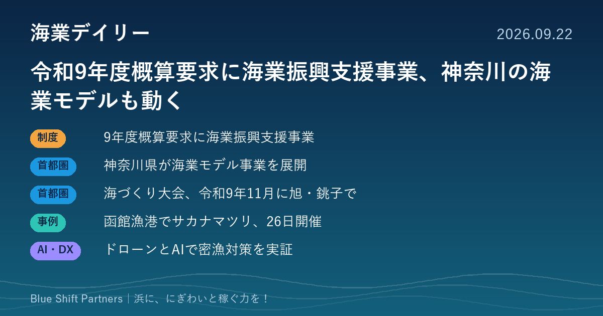

2026.09.22
令和9年度概算要求に海業振興支援事業、神奈川の海業モデルも動く

令和9年度の農林水産予算概算要求に「海業振興支援事業」が掲載されています。首都圏では神奈川県の海業モデル事業や、千葉県での全国豊かな海づくり大会に向けた動きがあり、北海道・函館の漁港では今週末に賑わいづくりのイベントが開かれます。
令和9年度の概算要求に「海業振興支援事業」が掲載されています
農林水産省が公表した令和9年度農林水産予算概算要求の一覧に、項目128として「海業振興支援事業」が挙げられています。あわせて水産基盤整備事業（公共）や漁港漁場機能増進事業も要求項目に含まれています。個別の要求額や事業内容は、項目ごとのPDFで公表されています。
ここがポイント：海業に取り組む漁協・自治体にとって、来年度以降に使える支援策の見通しを立てる材料になります。予算成立までは要求段階である点に注意が必要です。
出典：農林水産省「令和9年度農林水産予算概算要求の概要」（2026-09-22）
神奈川県、3地区で海業モデル事業を継続し、小田原・横須賀にも広げています
神奈川県は令和6年度から、三浦市の小網代（マガキ養殖と教育体験）、藤沢市の江の島（ブルーカーボン）、逗子市の小坪漁港（海洋レジャーと教育体験）の3地域でモデル事業を進めています。令和7年度からは小田原市と横須賀市の2地域で、普及促進協議会による実装が始まっています。
ここがポイント：地域の共同体に委託してビジネスモデルを検証する進め方は、首都圏の他の漁港が海業を始めるときの参考になります。
出典：神奈川県「かながわの海業の推進」（2026-09-10）
第46回全国豊かな海づくり大会は令和9年11月、旭市・銚子市で開かれます
千葉県で35年ぶりとなる全国豊かな海づくり大会は、令和9年11月14日に開催されます。式典は旭市の東総文化会館、海上歓迎・放流行事は銚子漁港が会場です。
ここがポイント：全国から人が訪れる機会は、漁港の食や体験を知ってもらう好機です。受け入れ準備を進める東総地域の漁協・事業者にとって、直売や食の企画を考える目安になります。
出典：千葉県「第46回全国豊かな海づくり大会の開催について」（2026-07-23）
函館の入舟漁港で、地域主体の「サカナマツリ2026」が9月26日に開かれます
函館漁港共創チームが、入舟漁港の屋根付き岸壁で9月26日11時から17時30分まで開催します。海産物・農産物の販売、買った魚介をその場で焼けるBBQ、水中ドローンなど約16の体験ブース、ライブ演奏、夕方のイカ釣り漁船の漁火点灯を予定しています。
ここがポイント：漁港を『働く場』から『人が集まる場』へ広げる試みで、地域の多様な担い手が共創する形は、他の漁港にも参考になります。
出典：函館イベント情報局「函館漁港 サカナマツリ2026」（2026-09-21）
横須賀沖で、ドローンとAIによる密漁対策の実証実験が行われました
関東学院大学が神奈川県立海洋科学高校、横須賀海上保安署、横須賀市と連携し、横須賀沿岸でドローンとAIによる密漁監視を試しました。高校生が操縦したドローンの映像をAIが判別して「密漁の可能性が高い」と示し、海上保安官の対応につながったと報告されています。
ここがポイント：見回りの人手が限られる浜でも、AIが疑わしい映像を絞り込めれば、資源を守る負担を減らせる可能性があります。
出典：関東学院大学（大学プレスセンター掲載）「AIが密漁を見抜く！」（2026-08-20）
予算の動きと現場の試みを並べると、海業は制度を待つだけでなく、地域が小さく試して検証する段階に入っているように見えます。函館の漁港イベントや神奈川のモデル事業のように、まず小さく始める工夫が各地で進んでいます。ご自分の浜で何から試せそうか、整理するお手伝いもできます。